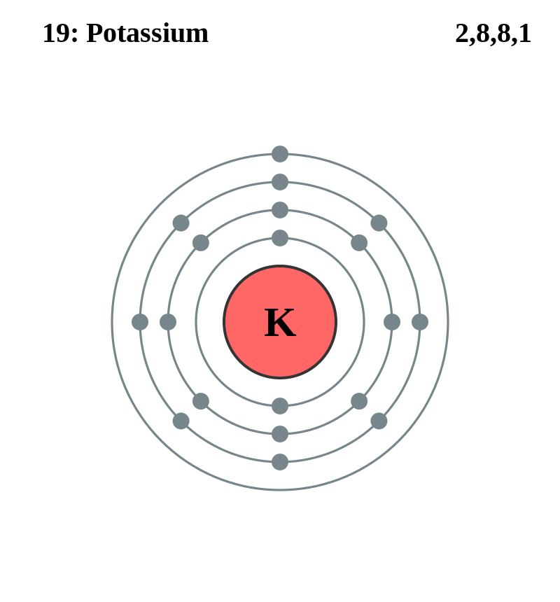

Basic Information about the element
Basic Information about the element
Name: Potassium
Symbol: P
Atomic Number: 19

1s2 2s2 2p6 3s2 3p6 4s1
The chemical element potassium is classed as an alkali metal .
It was discovered in 1806 by Sir Humphry Davy.
| Number of Protons/Electrons: | 19 |
| Number of Neutrons: | 20 |
| Atomic Mass: | 39.0983 amu |
| Melting Point: | 63.65 °C |
| Boiling Point: | 774.0 °C |
| Classification: | Alkali metal |
| Uses: | For making glass and soap |